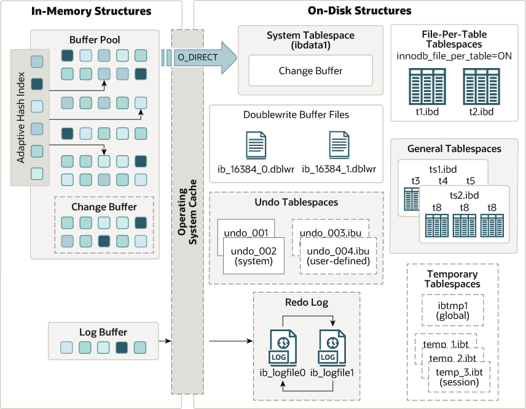
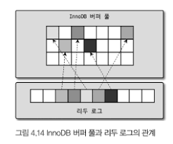

4.1 mysql 엔진 아키텍처
4.1.1 MySql의 전체 구조
MySql 엔진
- sql 문장을 분석하거나 최적화 , 요청을 받아들이는 역할을 한다.
- 커넥션 핸들러
- sql 파서
- 전처리기
- 옵티 마이저
스토리지 엔진
- 실제 데이터를 디스크에 저장,읽기 작업을 수행한다.
- mysql 엔진은 하나지만, 스토리지 엔진은 여러 스토리지 엔진을 사용할 수 있다.
핸들러 API
- mysql 엔진에서 스토리지 엔진에 읽기,쓰기 요청들을 handler 요청이라 한다.
- 여기 사용되는 handler들을 handler api 이다.
4.1.2 Mysql 스레딩 구조
- 포그라운드 스레드 백그라운드 스레드로 나누어진다.
thread/sql/one_connection(실제 사용자의 요청을 처리하는 포그라운드 스레드)를 제외하곤 모두 백그라운드 프로레스이다.
포그라운드 스레드 (사용자 스레드 )
- 접속된 클라이언트 수 만큼 존재, 요청 쿼리를 실행하는 역할
- mysql의 데이터 버퍼나, 케시로부터 데이터를 가져오거나 직접 디스크의 데이터나 인덱스 파일로 부터 데이터를 읽어와서 작업을 처리한다.
innodb 는 데이터를 읽어오는 작업은 백그라운드 스레드가 처리
백그라운드 스레드
- 데이터를 버퍼에서 디스크로 혹은 디스크에서 버퍼로 쓰는 작업들에 해당한다.
- InnoDb에서 사용자 요청 처리중 읽는 작업은 주로 사용자 스레드에서 처리된다.
- 읽기 작업은 지연 처리될 수 없다.
- 쓰기 작업은 버퍼링되어 처리될 수 있다.
- 따라서, 사용자는
update,insert,delete쿼리를 디스크의 처리를 기다리지 않아도 된다.
4.1.3 메모리 할당 및 사용 구조
글로벌 메모리 영역
- mysql 서버 시작 시 운영체제로부터 할당된다.
- 모든 스레드에 의해 공유 된다.
- 테이블 캐시
- innoDb 버퍼 풀
- innoDb 어댑티브 해시 인덱스
- innoDb 리두 로드 버퍼
로컬 (세션,클라이언트) 메모리 영역
- 클라이언트 스레드가 쿼리를 처리하는 데 사용하는 메모리 영역
- 각 스레드별로 독립적이며 공유되지 않는다.
- 쿼리 용도 별로 필요할 때만 공간이 할당되고 필요하지 않은 경우 할당되지 않는 경우도 있다.
- 조인 버퍼
- 정렬 버퍼
- 바이너리 로그 캐시
- 네트워크 버퍼
4.1.6 쿼리 실행 구조
쿼리 파서
- SQL 을 토큰으로 분해후 파서트리 생성
- SQL 문법 오류를 사용자에게 반환
전처리기
- 파서 트리를 기반으로 쿼리 문장의 구조적 오류 확인
- 토큰을 테이블명, 칼럼명, 내장 함수에 매핑 후 객체 존재 여부 확인
- 객체의 접근 권한 확인
옵티마이저
- 쿼리 문장을 빠르게 처리할 수 있는 방법을 결정
- 실행 계획 수립
실행엔진
- 만들어진 계획대로 각 핸들러에게 요청하고 그 결과를 또 다른 핸들러에 요청하는 역할을 한다.
핸들러 ( 스토리지 엔진 )
- 실행 엔진의 요청에 따라 데이터를 디스크에 읽고 쓴다.
- 테이블이 어떤 스토리지 엔진을 사용하느냐에 따라 스토리지 엔진은 변경된다.
InnoDB에 실행엔진이 핸들러를 호출하는 경우 핸들러는 InnoDB 스토리지 엔진이된다.
4.1.8 쿼리 캐시
- SQL 실행 결과를 저장하고 동일한 쿼리가 실행 시 캐시에서 결과를 반환함
- 캐시 불일치 문제가 발생해 9.0부터 제거되었다.
4.1.9 스레드 풀
- cpu 프로세서 친화도를 높이려면 코어 개수만큼
thread_pool_size설정해야한다.
I/O 요청 위주이면 더 큰 값을 설정할 수 있다. - 스레드 풀이 처리 중인 작업이 있는 경우
thread_pool_oversubscribe의 개수만큼 추가로 요청을 받아들여서 처리한다. 스레드 스케줄링이 촉발된다. - 스레드 그룹이 모두 작업 중이라면 워커 스레드를 추가할지 기존 스레드 그룹에서 스케줄링 할지 판단한다
thread_pool_stall_limit: 정의한 ms 만큼 작업 스레드가 지금 처리중인 작업을 처리하지 못하면 스레드 그룹에 스레드를 추가한다.thread_pool_max_threads값 이상 스레드 개수를 초과할 수 없다.
- 우선순위 큐와 후순위 큐를 사용해 특정 트랙잭션이나 쿼리를 우선적으로 처리한다.
4.1.10 트랜잭션 지원 메타데이터
- 테이블 구조 정보, 스토어드 프로그램 정보에 해당한다.
- 테이블이 깨지는 현상을 해결하기 위해 메타데이터를 InnoDB 테이블에 저장한다.
4.2 InnoDB 스토리지 엔진 아키텍처
4.2.1 프라이머리 키에 의한 클러스터링
InnoDB
- 프라이머리 키를 기준으로 클러스터링 되어 저장된다.
- 디스크에 프라이머리 키 값 순서대로 저장된다.
- 쿼리 실행 계획에서 pk 가 다른 보조 인덱스 보다 높은 우선 순위로 설정되어있어 pk가 선택된다.
MyISAM
- 클러스터링 키를 지원하지 않는다. pk와 세컨더리 인덱스는 구조적 차이가 없다.
- pk 를 포함한 모든 인덱스는 물리적인 레코드의 주소 값을 가진다.
4.2.2 외래 키 지원
- InnoDB에서 외래 키는 부모 테이블과 자식 테이블 모두 해당 칼럼에 인덱스 생성을 한다.
- 변경 시에는 부모 테이블, 자식 테이블에 데이터가 있는지 체크하는데 이때 잠금이 여러 테이블로 전파된다.그래서 데드락이 발생한다.
자식 테이블이 FK를 설정하는 테이블 이다.
4.2.3 MVCC (multi version concurrency control)
- 레코드에 대해 여러 버전을 동시에 관리해 잠금을 사용하지 않는 일관된 읽기를 제공한다.
update실행시commit실행 여부와 관계 없이 InnoDB 버퍼플은 새로운 값으로update된다.- undo log 에
update이전의 값을 저장한다. - 데이터 파일 ( 디스크 ) 는 백그라운드 스레드에 의해 갱신된다.
update이후에 해당 레코드를 조회하면 어디에 존재하는 데이터를 조회하는가에 대해서는 두가지 방식이 있다.- READ_UNCOMMITED : InnoDB 버퍼풀에서 데이터를 가져온다.
- READ_COMMITD, REPEATABLE_READ, SERAIALIZABLE : undo log 영역에서 데이터를 반환한다.
commit실행시에 현재의 상태를 영구적인 데이터로 만든다.rollback실행시에 undo log 영역에 내용에 관련된 트랜잭션 유무를 확인한 후에 undo log 영역에서 삭제한다.
4.2.4 잠금 없는 일관된 읽기 (non-loacking consitent read)
- MVCC 를 이용해 잠금 없이 읽기 작업을 수행한다.
- SERIALIZABLE 외의 잠금 수준에서는 순수한
select작업은 다른 트랜잭션의update작업과 관계 없이 항상 읽기 작업을 수행 가능하다.
4.2.5 자동 데드락 감지
- InnoDB 스토리지 엔진은 데드락 감지 스레드가 존재한다.
- 데드락 감지 스레드는 교착상태에 빠진 트랜잭션을 잠금 대기 그래프 (Wait-for List) 를 사용해 검사 후 트랜잭션중 하나를 종료시킨다.
- 종료시킬 트랜잭션은 undo log의 양이 적은 트랜잭션이다.
- 동시처리가 많은 시스템에서 데드락 감지 스레드는 CPU 성능 저하를 일으킨다.
innodb_deadlock_detect를 끄면 데드락 감지 스레드가 실행되지 않는데, 이때 데드락은 여전한 상태이므로innodb_lock_wait_timeout값을 충분히 낮게 설정 해야한다.
4.2.6 자동화된 장애 복구
- MySql 서버 재시작시 완료되지 못한 트랜잭션이나 디스크에 일부만 기록된 데이터 페이지들에 대해 복구작업이 자동으로 수행된다.
- 자동으로 복구작업이 진행되지 않은경우
innodb_force_recovery값을 1~6으로 설정에 수동으로 복구해야한다.
4.2.7 InnoDB 버퍼 풀

- 디스크 데이터 파일, 인덱스 정보를 메모리에 캐시하는 공간
- 버퍼풀에 데이터가 존재하지 않으면 디스크에 무작위로 저장된 레코드에 대해 I/O 작업이 발생한다.
- 버퍼풀은 이러한 변경 데이터를 모아서 처리해 디스크 작업의 횟수를 감소시킨다.
버퍼풀의 크기 설정
- 레코드 버퍼 : 클라이언트 세션에서 테이블의 레코드를 읽고 쓸 때 사용되는 버퍼
- 커넥션이 많은 경우 레코드 버퍼에 사용되는 메모리 공간이 많이 요구된다.
- 동적으로 버퍼풀 크기를 할당할 수 있다.
- 경합을 줄이기 위해서 버퍼풀은 버퍼 풀 인스턴스 여러개로 분리되어 관리된다.
버퍼풀의 구조
- 버퍼 풀의 메모리 공간을 페이지 크기로 조각을 나누어 스토리지 엔진이 데이터가 필요할 때 데이터 페이지를 읽어들여 각 조각에 저장한다.
- LRU list : LRU (Old 서브리스트), MRU (New 서브리스트) 두가지 리스트로 구성되어 있다.
레코드가 오래될수록 LRU 의 끝으로 이동해 제거되거나 aging 이 적용되어 제거된다. 레코드가 자주 사용되면 MRU 공간에서 계속 살아 남는다. - flush list : 디스크로 동기화 되지 않은 데이터를 가진 페이지 목록으로 변경이 가해진 데이터 페이지를 flush list에 저장한다. 특정 시점에 플러시 리스트 들은 디스크에 기록된다.
- free list : 할당되지 않은 페이지 공간을 관리
- LRU list : LRU (Old 서브리스트), MRU (New 서브리스트) 두가지 리스트로 구성되어 있다.
버퍼풀과 리두 로그
- 버퍼풀은 데이터 캐시 기능과 쓰기 버퍼링 기능을 한다.
- 데이터 캐시 기능: 자주 읽거나 쓰는 데이터를 메모리에 보관하여 디스크 접근을 최소화
- 쓰기 버퍼링 기능: 데이터를 디스크에 즉시 기록하지 않고, 메모리에서 일정 기간 동안 유지하다가 적절한 시점에 디스크에 기록
- 쓰기 버퍼링 기능은 리두 로그와 밀접하다.
- 버퍼풀의 페이지 상태
- clean page : 버퍼 풀에서 데이터 변경이 되지 않은 페이지
- dirty page : 디스크와 버퍼 풀 의 데이터 상태가 달라 디스크로 기록되어야 한다.

- 활성 리두 로그 : 리두 로그 중 재사용 불가능한 공간이다.
( 이미지의 리두 로그에서 화살표를 가진 부분에 해당한다. ) - 더티 페이지는 특정 리두 로그 엔트리와 관계를 갖는다.즉, 더티 페이지가 생성된 시점에 해당 변경사항이 리두 로그에 기록된다.
- 체크포인트가 발생하면 체크포인트의 LSN보다 작은 리두로그 엔트리와 더티 페이지 모두 디스크로 동기화돼야한다. 체크 포인트 시점까지의 모든 변경사항을 디스크에 반영함을 의미한다.
버퍼 풀 플러시
- 더티 페이지 플러시는 더티 페이지를 디스크에 동기화하는 부분이다.
- 더티 페이지 플러시가 성능에 영향에 없게 하기 위해 아래 두가지 방법을 사용한다.
- 플러시 리스트 플러시
- 리두 로그 공간을 지우기 위해 버퍼풀의 더티 페이지를 디스크로 동기화 해야한다.
- 버퍼풀에 더티 페이지가 많을 수록 disk i/o 를 한번으로 줄일 수 있다.
- Disk I/o Burst : 버퍼풀에 더티 페이지가 90% 이상 존재하면 즉시 더티 페이지를 disk i/o 를 수행하는 현상
- adpative flush : redo log 증가속도를 분석해 적절한 수준의 더티 페이지가 버퍼풀에 유지될 수 있는 수준에서 disk i/o 수행
- LRU 리스트 플러시
- LRU 리스트에서 사용 빈도가 낮은 데이터 페이지를 제거해 새로운 페이지를 읽어올 공간을 만드는 과정에서 사용한다.
버퍼 풀 상태 백업 및 복구
- warming up : 디스크의 데이터가 버퍼풀에 적재되어 있는 상태
- MySql 이 재시작될때 warming 상태를 유지하기 위해 현재 buffer pool 상태를 덤프 할 수 있다.
4.2.8 Double Write Buffer
- Partial page , Torn Page : 더티 페이지를 디스크로 flush 하는 과정에서 하드웨어의 오작동이나 시스템의 비정상 종료가 발생으로 인하여 디스크에 일부만 기록되어 해당 페이지의 내용을 복구 할 수 없는 현상
- Partial page, Torn page 현상을 방지 하기 위해 Double-Write 기법 사용
더티 페이지 디스크 플러시 절차
- 데이터 변경 내용을 기록하기 전에 우선 시스템 테이블 스페이스의 Double Write Buffer 에 기록
- 각 더티 페이지들을 데이터 파일의 적당한 위치에 하나씩 랜덤으로 쓴다.
- InnoDb 스토리지 엔진은 재시작 될 때 항상 DoubleWrite buffer의 내용과 데이터 파일 내용을 모두 비교해 다른 내용이 존재할 경우 DoubleWrite buffer의 내용을 데이터 파일로 복사한다.
- Double Write buffer 은 안전성을 위해 사용해 데이터 무결성이 중요한 서비스에서 활성화를 고려한다.
4.2.9 언두 로그
- 트랜 잭션과 격리 수준을 보장하기 위해 DML 로 변경되기 이전 버전의 데이터를 별도로 백업한다.
- 트랜잭션 보장
트랜잭션이 롤백시 언두 로그에 백업해둔 이전 버전의 데이터를 이용해 복구 - 격리 수준 보장
데이터에 여러 커넥션이 접근하면 트랜잭션 격리 수준에 맞게 변경중인 레코드 대신 언두 로그에 백업해둔 데이터를 읽어 반환
- 트랜잭션 보장
- 데이터 변경시 변경 이전 데이터가 로그 데이터로 생성된다.
트랜잭션 내에서 데이터가 변경될 때마다 undo log 는 생성되며 (commit이 없어도) rollback 시에 이전 상태로 복구할 수 있게 해준다.
언두 로그 모니터링
- 트랜잭션이 장시간 실행되면 언두 로그에 저장해야하는 데이터 양이 증가 한다.
- 스토리지 엔진은 이 언두 로그 이력을 스캔해 필요한 레코드를 찾을 수 있기때문에 쿼리 성능이 저하된다.
- 따라서, 언두 로그 건수를 확인해 언두 로그 급증 여부를 모니터링 해야 한다.
update, delete: 언두 로그는 mvcc 와 데이터 복구에 사용된다.insert: mvcc에 사용되지 않고 롤백이나 데이터 복구만을 위해 사용된다.
언두 테이블스페이스 관리
- 테이블 스페이스 : 언두 로그가 저장되는 공간
- 8.0 이전 버전 : 서버 초기화 시에 시스템 테이블 스페이스에 저장되었다.
- 8.0 이후 버전 : 언두 로그는 항상 시스템 테이블 스페이스 외부의 별도 로그 파일에 기록
- 언두 스페이스의 구조는 아래와 같다.
- 언두 테이블 스페이스
- 롤백 세그먼트 집합
- 언두 슬롯 집합
- 롤백 세그먼트 집합
- 언두 테이블 스페이스
- 언두 로그 슬롯은 트랜잭션이 실행하는 문장에 따라 최대 4개 사용가능하다.
- 언두 로그 슬롯 부족은 트랜잭션 실행을 불가능하게 한다.
- 언두 테이블 스페이스는 8.0 이후 부터 동적으로 추가 삭제 가능하다.
- undo tablespace truncate : 언두 테이블 스페이스 공간을 필요한 만큼만 남기고 불필요하거나 과도하게 할당된 공간을 운영체제에 반납하는 것
4.2.10 체인지 버퍼
-
체인지 버퍼는 특정 데이터 페이지가 버퍼 풀에 없을 때 secondary-index 페이지에 대한 변경 사항을 캐시하는 특수한 데이터 구조이다.
-
insert, update는 데이터 파일 변경 뿐만 아니라 해당 테이블의 secondary index 또한 업데이트 해야 한다. -
인덱스를 업데이트 하는 작업은 랜덤하게 디스크를 읽는 작업이 필요한데 이는 많은 자원을 사용한다는 문제점이 존재한다.
-
따라서, InnoDB 는 보조 인덱스 페이지가 버퍼 풀에 있으면 바로 업데이트를 수행하고, 디스크에서 읽어와서 업데이트를 해야 한다면 즉시 실행하지 않고 임시 공간 (체인지 버퍼)에 저장 해 두고 바로 사용자에게 결과를 반환해 성능을 향상 시킨다.
-
체인지 버퍼 머지 스레드 : 백그라운드에서 체인지 버퍼에 임시로 저장된 인덱스 레코드 조각을 병합하는 스레드
4.2.11 리두 로그 및 로그 버퍼
- 트랜잭션의 영속성을 보장하기 위해 리두 로그를 사용한다.
- 데이터 변경시 변경 사항이 로그 데이터로 생성된다.
- 리두 로그는 mysql이 비정상 적으로 종료되었을때 장애 복구를 위해 사용된다.
- DBMS 데이터 파일은 쓰기보다 읽기 성능을 고려한 자료구조를 가져 데이터 파일 쓰기는 디스크 랜덤 엑세스가 필요한데, 이로 인한 성능 저하를 막기 위해 쓰기 비용이 낮은 리두 로그를 가지고 있다.
- 로그 버퍼 : 데이터 파일과 리두 로그를 버퍼링할 수 있는 InnoDB 버퍼풀과 마찬가지로 리두 로그를 버퍼링할 수 있는 자료구조로 성능을 위해 사용한다.
- 리두 로그는 트랜잭션
commit시 마다 즉시 디스크로 갱신하는 방식을 사용해야 장애 복구에 사용 가능한데 이는 부하를 유발한다. 그래서 리두 로그를 동기화 하는 주기를 설정할 수 있는 시스템 변수innodb_flush_log_at_trx_commit를 제공한다.
트랜잭션의 변경 내용을 적용할 수 있도록 redo log를 기록하며 commit 시에 변경사항이 redo log에 기록된다.
어댑티브 해시 인덱스
- 어댑티브 해시 인덱스 : 사용자가 수동으로 생성하는 인덱스 ( B-tree ) 가 아닌, 자주 사용되는 데이터에 대해 InnoDB 스토리지 엔진이 자동으로 생성하는 인덱스
- B-Tree 인덱스는 검색을 해야하므로 많은 스레드에서 동시 요청시 쿼리 성능 저하가 있다. 어댑티브 해시 인덱스는 인덱스 키 값, 데이터 페이지 주소 쌍의 해시 테이블이므로 탐색하는 과정이 없어 쿼리 성능이 향상된다.
- 또, B-Tree 검색 과정에서 내부 잠금 (세마포어)의 수도 줄어든다.
- 메모리 공간 ( 어댑티브 해시 인덱스도 메모리 공간을 점유하기때문), cpu 사용량, 해시 인덱스 히트율을 고려해 사용해야한다.
단점
- 버퍼 풀에 존재하는 데이터에 대한 검색 속도를 빠르게 하는 것이므로 디스크 읽기가 많은 경우 효과가 없다.
- 인덱스 키 값이 해시 인덱스에 없는 경우에도 우선적으로 어탭티브 해시 인덱스를 우선 사용해야 한다.
delete table,alter table시 처리 과정이 늘기 때문에 성능이 저하된다.
4.4 MySQL 로그 파일
4.4.1 에러 로그 파일
MySQL 이 시작되는 과정과 관련된 정보성 및 에러 메시지
- 설정 파일 변경, 데이터 베이스 비정상 종료된 이후 다시 시작 하는 경우에 에러 로그 파일을 확인 해야한다.
마지막으로 종료할 때 비정상적으로 종료된 경우 나타나는 InnoDB 트랜잭션 복구 메시지
- MySQL 서버가 비정상적, 강제 종료 후 다시 시작될 때 완료하지 못한 트랜잭션 작업을 정리하는 작업을 하는데 처리 과정을 메시지로 출력한다.
쿼리 처리 도중에 발생하는 문제에 대한 에러 메시지
비정상적으로 종료된 커넥션 메시지
- 커넥션이 비정상적으로 종료된 경우 에러 로그가 쌓인다.
- 클라이언트당 비정상 종료 횟수를 카운트 하는데 임계 값을 넘으면 접속이 차단된다.
InnoDB 모니러팅 또는 상태 조회 명령의 결과 메시지
MySQL 종료 메시지
- MySQL 이 종료시 메시지를 남겨 원인을 파악할 수 있다.
- 메시지가 없거나 스택 트레이스 의 경우 세그멘테이션 폴트로 비정상 졸료된 것이다.
4.4.2 제너럴 쿼리 로그 파일
- MySQL 서버에서 실행되는 쿼리의 전체 목록을 시간 단위로 조회할 수 있다.
- 쿼리 실행전 로그 파일에 먼저 기록하기 떄문에 쿼리에 오류가 발생한 경우에도 기록된다.
4.4.3 슬로우 쿼리 로그
- 운영중인 MySQL 서버의 쿼리 튜닝이 필요한 경우 사용하면 용이하다.
- 정상적으로 실행된 쿼리에 한해 로그 파일에 기록한다.
- 실제 소요된 시간을 기준으로 기록 여부를 판단한다.